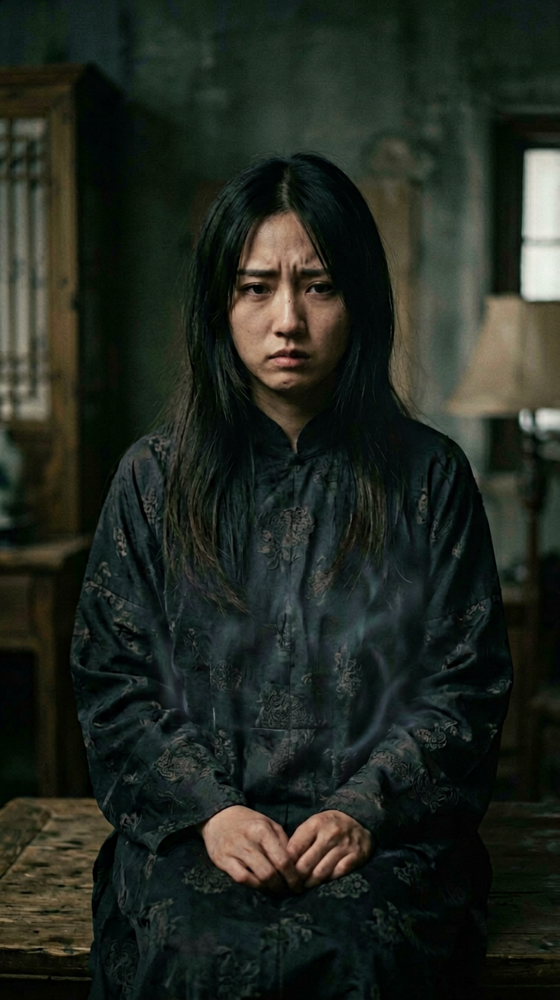
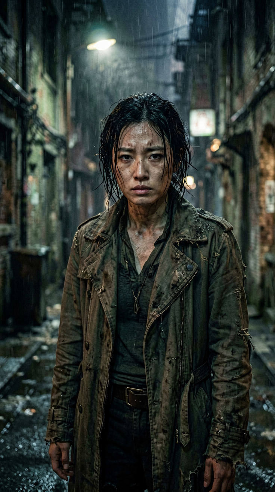
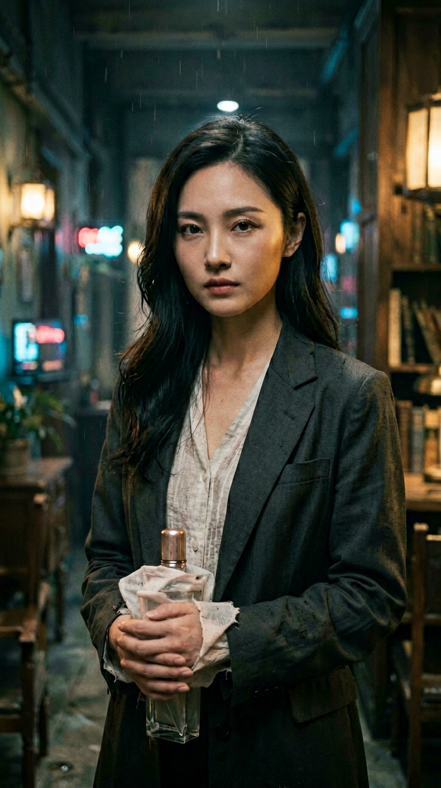

自然语言创作
大白话生成分集剧情、冲突转折和结尾钩子。
输入一句大白话创意，完成多集剧情、分镜脚本、关键帧、视频片段与最终成片。
向下探索不是功能演示，而是能从创意走到视频文件的本地创作工具。每一步都可以检查、编辑和重做。
大白话生成分集剧情、冲突转折和结尾钩子。
把剧情变成包含人物、动作、光线与景别的镜头描述。
竖屏或横屏构图，懒加载展示每个场景的电影感画面。
携带完整角色与前情上下文，生成片段并通过 ffmpeg 合并。
以下图片来自项目实际生成结果，用于展示关键帧与人物延续能力。



状态保存在浏览器本地，随时返回上一步调整，不把创作过程锁进黑盒。